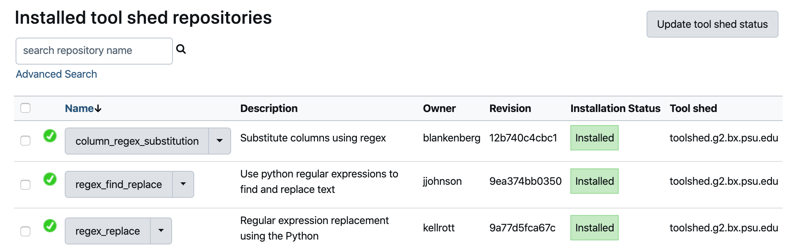

Running a workflow in Galaxy¶
In this use case, we are going to¶
- Upload 3 workflow description files in the Galaxy server instance
- Visualise these workflows and see that tools to execute the workflows are missing
- since you are administrating the instance, install the missing tools
- Eventually run the workflows on input data obtained from a remote public repository.
1. Upload workflow description file (.ga)¶
- Ensure you are connected to your Galaxy server as an admin (the email you have entered in the galaxy.yml configuration file and the password to you've entered for this login when you registered for the first time)
- Click the workflow menu
- Click the "Upload or import workflow" button at the top right
-
In the
Galaxy workflow URL:field, paste the url of the workflow file:
Note that this file is in the Run-Galaxy repository where a part of the material for this training is hosted1
https://raw.githubusercontent.com/ARTbio/Run-Galaxy/master/workflows/Galaxy-Workflow-canonical_transposons.gtf_from_transposon_sequence_set.txt.ga -
Click on the
Importbutton -
repeat the same operation with the second workflow
1
https://raw.githubusercontent.com/ARTbio/Run-Galaxy/master/workflows/Galaxy-Workflow-Extract_canonical_transposons_fasta.ga -
repeat the same operation with the third workflow
1
https://raw.githubusercontent.com/ARTbio/Run-Galaxy/master/workflows/Galaxy-Workflow-workflow_of_workflows.ga
Note
Alternatively, you could upload the workflow files from you computer instead of uploading them by URL
- the 'Workflow` menu is now a list of 3 workflows that should look like :

- Click the workflow
canonical_transposons.gtf from transposon_sequence_set.txt (imported from uploaded file)and theEditoption - Observe the warning window that should look like:
Issues loading this workflow
Please review the following issues, possibly resulting from tool upgrades or changes.
- Step 3: toolshed.g2.bx.psu.edu/repos/kellrott/regex_replace/regex_replace/1.0.0
- Tool is not installed
- Step 4: toolshed.g2.bx.psu.edu/repos/kellrott/regex_replace/regex_replace/1.0.0
- Tool is not installed
- Step 5: toolshed.g2.bx.psu.edu/repos/blankenberg/column_regex_substitution/column_regex_substitution/0.0.1
- Tool is not installed
- Step 6: toolshed.g2.bx.psu.edu/repos/blankenberg/column_regex_substitution/column_regex_substitution/0.0.1
- Tool is not installed
- Step 7: toolshed.g2.bx.psu.edu/repos/blankenberg/column_regex_substitution/column_regex_substitution/0.0.1
- Tool is not installed
- Step 8: toolshed.g2.bx.psu.edu/repos/blankenberg/column_regex_substitution/column_regex_substitution/0.0.1
- Tool is not installed
- Step 9: toolshed.g2.bx.psu.edu/repos/blankenberg/column_regex_substitution/column_regex_substitution/0.0.1
- Tool is not installed
- Step 10: toolshed.g2.bx.psu.edu/repos/blankenberg/column_regex_substitution/column_regex_substitution/0.0.1
- Tool is not installed
- Step 12: toolshed.g2.bx.psu.edu/repos/kellrott/regex_replace/regex_replace/1.0.0
- Tool is not installed
- Step 13: toolshed.g2.bx.psu.edu/repos/kellrott/regex_replace/regex_replace/1.0.0
- Tool is not installed
When you read the warnings, you will see that the workflow was indeed successfully imported. However, some tools are missing, namely:
1 2 3 | |
broken workflow

- We are going to fix this. Click on the
Continuebutton and then the upper "wheel" icon and selectClose, we will come back to the workflow editor when the missing tools are installed in the server.
2. Installing (missing) tools¶
The missing tools are reported in the tools.yml file in yaml format in the Run-Galaxy repository, as well as just bellow.
Details of missing tools
Thus, we have to install the following three tools in our Galaxy instance:
tools:
1 2 3 4 5 6 7 8 9 10 11 12 13 14 15 16 17 18 19 20 | |
- Click on the
Admintop menu - In the left bar click on
Manage tools
Check that there is actually no installed tools !
- Now, click the
Install new toolsmenu (again in the left bar) - Press the
Galaxy Main Tool Shedbutton - In the search field, copy and paste
and press the Enter key.1
regex_replace - One tool will show up, owned by
kellrott. Click this tool, and selectpreview and install(No other solution anyway) - Click the
Install to Galaxybutton at the top of the screen - In the
Select existing tool panel section:menu, selectText Manipulation. Thus, the tools will appears in the sectionText Manipulationof the Galaxy tools. - Click
Install - After a few seconds, you will notice the
Monitor installing tools...in the screen. - And rapidly enough, the Installation status should turn to green.
- Click again the
Manage toolsmenu in the left bar, and look at the newly installed toolregex_find_replacein the list.
- Repeat the same operations for the tool
owned by1
regex_find_replacejjohnson(version1.1.0).
Do not take the tool with the same name but owned by galaxyp
- Repeat the same operations for the tool
owned by1
column_regex_substitutionblankenberg(version0.0.1)
For this last installation, you will see a different panel after clicking Install to Galaxy:
If you scroll down a little bit, you should see a list of uninstalled tool dependencies like this:

This is a software package required to get the tool column_regex_substitution working properly.
The required package (python 2.7) will be installed by the package manager conda.
You can further check this by clicking the Display Details button bellow the Dependency list.
Do not forget to select the tool panel section
Text Manipulation, and finally click the Install button.
This time, the Monitor installing tool shed repositories will display new steps (in yellow/orange),
including the Installing tool dependencies step. The whole process may take longer,
but not too long in this specific case.
- Finally go back for a last time to the
Manage toolspanel:

There you'll see all three tools needed to properly run the imported workflow.
3. Check that the imported workflows now display correctly¶
If you click the workflow top menu, you should now be able to edit the imported workflows,
and see that everything is displaying correctly. For the workflow
canonical_transposons.gtf from transposon_sequence_set.txt :

We can go through the various steps of the workflows and figure out what they are doing.
This first workflow performs a suite of find-and-replace text manipulations, starting
from input data that has been tagged transposon_set_embl.txt and producing a new text
dataset that is renamed canonical_transposons.gtf.
The second workflow uses the same input data file transposon_set_embl.txt to generate
a fasta file of canonical_transposon sequences
The third workflow is a workflow of the two previous workflows !
We will come back to all these steps after the workflows execution. However, we need to retrieve the input data set before running the workflows on these data.
Retrieve the transposon_set_embl.txt dataset¶
- Create a new history and name it
transposon_set_embl.txt manipulation - import the dataset using the
Paste/Fetch datamode of the upload manager (the small bottom-top arrow icone at the top left of the Galaxy interface). Copy the URL
in the open field and click the1
https://github.com/cbergman/transposons/raw/master/current/transposon_sequence_set.embl.txtStartbutton. - have a close look at the file
Run the workflow¶
- Click on the workflow menu
- Click on the first workflow and select the Run option
- Leave the
Send results to a new historymenu to theNooption for the moment. - Just Click the
Run workflowbutton to run the workflow, and look at datasets in the history turning from grey to yellow to green. Note: often you don't see the dataset in the "yellow" state (running). You just need to refresh the history with the 2-curved-arrows icon of the local history menu. - repeat the same operation (from the input history) for the second workflow
Extract canonical transposons fasta (imported from uploaded file)